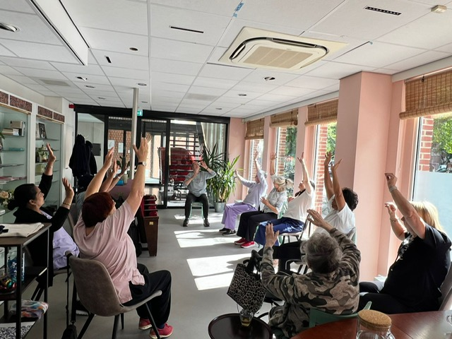
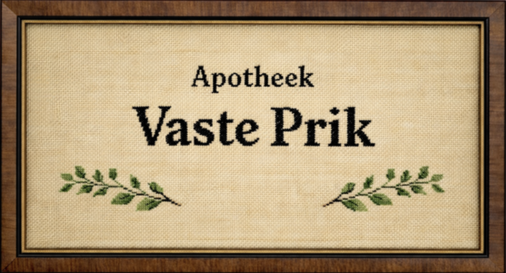
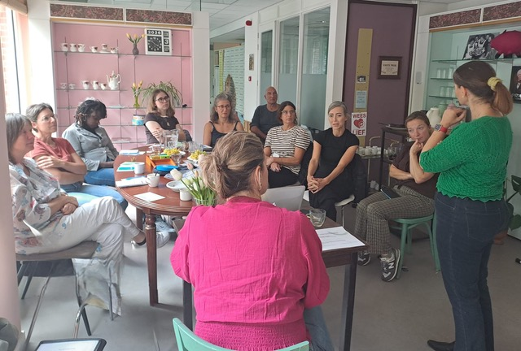
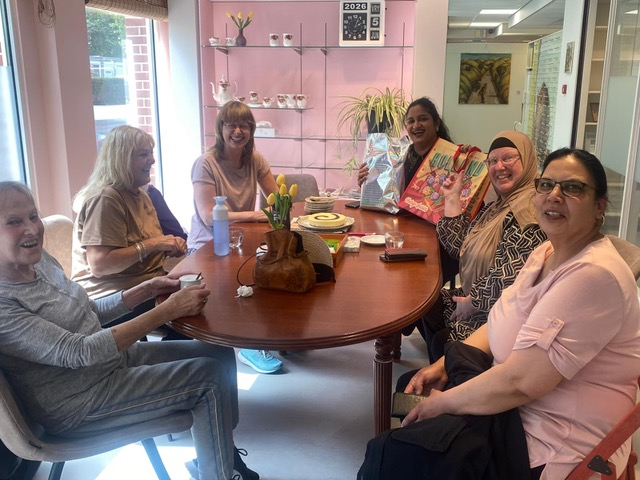
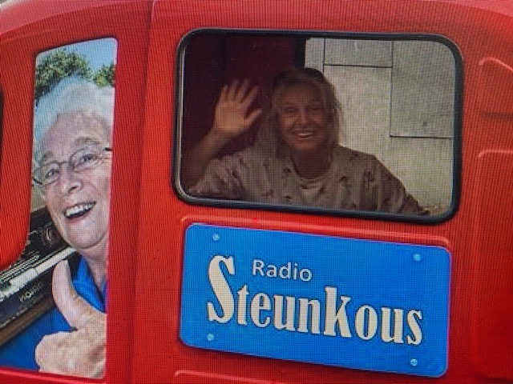

Haal je wekelijkse dosis energie bij Vaste Prik!
Wil je een praatje maken met mensen uit de buurt, of met iemand van Buurtzorg Oost? Kom dan naar Buurtzorgcafé Vaste Prik, in de opgeknapte apotheek aan de Vrolikstraat. Het gezondheidscafé is elke dinsdag en vrijdag open van 11 tot 15 uur — voor koffie, thee, of kijk op de agenda wat er nog meer te doen is.
Wanneer open
di & vr · 11:00–15:00
Waar
Vrolikstraat 191A




Van leegstaande apotheek naar een café voor de hele buurt.
De grote apotheek aan de Vrolikstraat stond al een tijd leeg door gebrek aan personeel. De wijkverpleging van Buurtzorg Oost wist het om te toveren tot Buurtzorgcafé Vaste Prik: een nieuwe manier om elkaar te helpen zo gezond mogelijk te blijven.
Een laagdrempelige plek waar je zonder verplichting kunt binnenlopen, mag blijven hangen en waar ontmoeting vanzelfsprekend is.
“Je komt hier voor een prik van verbinding, een injectie van kennis en een shot herkenning.”
De schijf van vijf bij Vaste Prik
Ons recept om elkaar zo gezond mogelijk te houden rust op 5 smaakmakers.
Kennis delen
Gezonde Ontmoetingen om kennis te delen, klachten te voorkomen of draaglijker te maken.
Vitaliteit versterken
De mentale en lichamelijke gezondheid verbeteren. Er is ruimte voor spontane initiatieven die bezoekers zelf aandragen.
Samenwerken
Mensen in de buurt in contact brengen — met elkaar, met zorg en welzijn, met ondernemers en buurtinitiatieven. En zorgmedewerkers onderling beter laten samenwerken.
Preventie
Beter voorkomen dan genezen. Laat regelmatig je vitale functies meten en weet of je op de goede weg bent.
Koffie
Echt lekkere koffie, thee en een luisterend oor. Heb een klik bij Vaste Prik en je kan er weer tegen!
Deze maand bij Vaste Prik
We zijn open op dinsdag en vrijdag van 11:00 tot 15:00. Daarnaast staan er elke maand vaste momenten en wisselende activiteiten op de kalender.
Daarnaast zijn er wisselende extra's zoals een grote pan couscous, gezonde soep, een filmmiddag of een extra bloeddrukmoment. Houd het prikbord in het café in de gaten!
Veel mensen vragen dit eerst
Kom langs of laat het even weten.
Wilt u deelnemen aan een bijeenkomst? Aanmelden is fijn via een mailtje, maar u mag ook zomaar binnenlopen op dinsdag en vrijdag tussen 11:00 en 15:00.
Wil jij iets betekenen voor Vaste Prik? 🌻
Heb je een leuk idee of wil je meehelpen? Stuur een berichtje, dan komen we met je in contact!
Stuur een berichtje
Initiatiefnemer
Marjolijn Onvlee
Wijkverpleegkundige Buurtzorg Oost
“Vaste Prik wil een medicijn voor de buurt zijn. Een plek om een beter humeur te krijgen: je kan er wat opsteken, nieuwe mensen leren kennen en lekkere koffie drinken. Wat wil een mens nog meer?”
Verder zijn er speciale bijeenkomsten en cursussen rondom gezondheid. En de Radio Steunkous Camper is er ook te bewonderen.
Openingstijden
Overige dagen op afspraak · vrije inloop, iedereen welkom